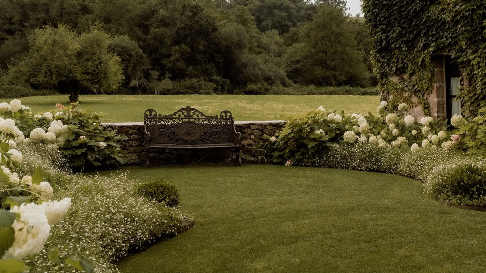

Beyond The Wedding
Things To Do in Cantabria
Make a trip of it — medieval towns, Gaudí architecture, wild Atlantic coastline and green mountains are all within easy reach of Palacio de Caranceja.
Nearby
Worth The Trip
Santillana del Mar
~20 minutes from the venue
One of Spain's best-preserved medieval towns, all cobbled streets and stone manor houses, with a replica of the famous Altamira cave paintings nearby.
Comillas
~20 minutes from the venue
Home to El Capricho, one of Gaudí's earliest buildings, and the grand Palacio de Sobrellano — plus a lovely beach for an afternoon stroll.
Santander
~25 minutes from the venue
Cantabria's elegant seaside capital — the Magdalena Peninsula, El Sardinero beach, and a lively old town full of seafood restaurants.
Cabárceno Natural Park
~40 minutes from the venue
A vast open-air wildlife park set in a former mining basin — elephants, bears and bison roam freely across dramatic green terrain.
Picos de Europa
~1 hour from the venue
Dramatic limestone peaks and glacial lakes — take the Fuente Dé cable car up for one of the best views in northern Spain.
Oyambre & Somo
~15–45 minutes from the venue
Wild Atlantic beaches backed by dunes and green hills — Oyambre is close by, while Somo (near Santander) is a favourite for surfers.